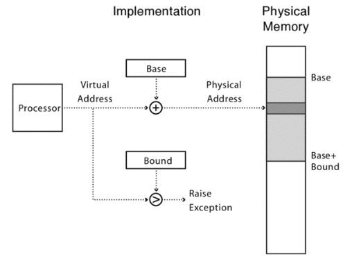
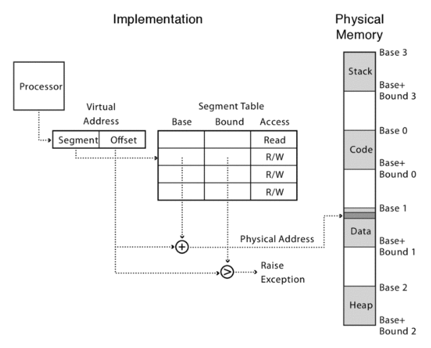
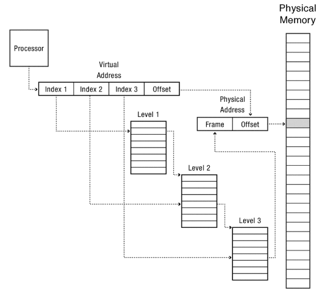

Memory
Table of Contents
Protection: we want to prevent access to private memory of other processes. Translation: ability to translate accesses from one address space (e.g. virtual) to a different one (e.g. physical). Controlled overlap: separate state of threads should not collide in physical memory; conversely, we would like the ability to overlap when desired for communication purposes.
1. Address Translation
1.1. Base and Bound
We can define a block of memory a program can use using a base address and a bound offset/size. The virtual address space of the program starts at zero, so our OS can translate on-the-fly these addresses by adding them to our base address. Protection is done by ensuring that our addresses never exceed the bound:

Base and bound has several problems, however. Base and bound is wasteful, as it must dedicate physical memory for future use. Additionally, we must also solve the fragmentation problem, as the kernel must somehow fit whole processes into contiguous blocks of memory. It is also hard to do inter-process sharing, since processes are not allowed to go outside its bounds.
1.2. Segmented Memory
Instead of just having one base and bound for a program, the hardware can support an array of pairs of base and bounds for each program. This is called segmentation since we can split our virtual memory into several segments. The higher order bits of the virtual address are used to index into the array:°

Now, this allows us to share segments between processes, while still keeping other segments like data and stack separate.
Intel x86 also includes six special segment registers that manage memory segmentation. These are split into code (CS), stack (SS), data (DS), extra (ES), and additional segments (such as FS and GS).
However, the principal downside of segmentation is the overhead of managing many dynamically changing memory segments. At some point, fragmentation is still a problem.
1.3. Paged Virtual Address Space
We can also break the entire virtual address space for our program into equal sized chunks (i.e. pages), with each page having its own base. To prevent fragmentation, these page sizes are usually small (e.g. 1K-4K). The processor translates each virtual address according to the bases stored in a page table. Each process has its own page table in physical (kenel) memory, and is pointed to by the page table base register (PTBR).
A problem is depending on how much memory we have and how big each page is, our page table can become very large per process. Say the offset is 12 bits, then a 64-bit address space has a total of \(2^52\) with 8 bytes each, which comes out to 36 exabytes: a ridiculous amount of memory. Additionally, a lot of our page table is sparse, which means that many of the entries are unused.
A solution is to use a multi-level page table:

Each page table is the size of a page. Only the top-level page table needs to be filled out; lower levels of the tree only need to be allocated if those portions of the virtual address space are in use.
Some processors (e.g. PowerPC, UltraSPARC, IA64) also use a hash table instead of a multi-level page table, and this is often called a inverted page table (as opposed to forward page tables seen previously). This size is independent of virtual address space and is directly related to the amount of physical memory. A downside, however, is the complexity of managing hash chains in hardware.
1.4. Translation Lookaside Buffer
Memory address translation is accomplished by the memory management unit, or MMU. The MMU must attempt to translate virtual addresses to physical addresses on every instruction fetch, every load, every store. It generates a “page fault” (trap) if it encounters an invalid page table entry. The MMU must do a page table tree traversal to translate each address, which turns a potentially fast memory access into a slow multi-access table traversal.
The solution is to cache translations in a translation lookaside buffer (TLB). The TLB is a small hardware table the contains the results of the most recent address translations, mapping a virtual page to a physical page.